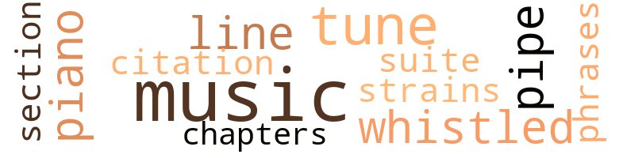
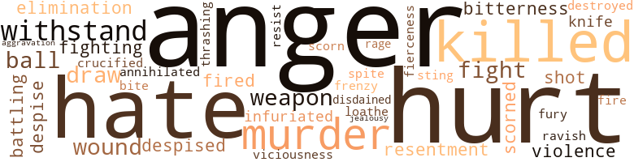
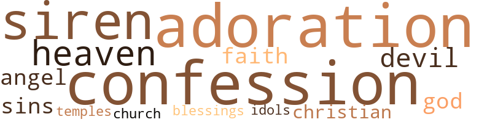

High Places (The), by Branch, Edward (1957)
23 music-related terms matched in this text.
Most frequent terms in this topic: music (6); piano (2); line (2); pipe (2); whistled (2)
chapter.n.01
Definition: a subdivision of a written work; usually numbered and titled
| word | sentence |
|---|---|
| chapters | " The opening chapters have already been typed - and I am taking them to New York with me , " Eugenia said . |
music.n.01
Definition: an artistic form of auditory communication incorporating instrumental or vocal tones in a structured and continuous manner
| word | sentence |
|---|---|
| music | She was still very young , with other interests to occupy her mind , such as her music , her love for reading , and lately , her growing fascination for the man to whom she had once denied her thoughts . |
| music | Soft semiclassical music emanated from the phonograph-sweet , soothing strains . |
| music | " Set to music , that sounds like a good tune to me , " she said in a carefree manner . |
| music | " She 's studying for the concert stage ; from all indications she 'll make it , because she has a talent for music . " |
| music | On this particular afternoon , Eugenia had gone for a visit with Herkimer and Blossom , and Lavenia was , as usual , keeping her date with the great composers in the music room . |
| music | " As long as the music continues from her piano upstairs , we are quite safe from her sudden appearance . " |
phrase.n.02
Definition: a short musical passage
| word | sentence |
|---|---|
| phrases | At last , when the lips of the lovers were parted , and they had exchanged several endearing phrases between them , in whispering tones , Benjamin made his footsteps heard on one of the concrete footpaths leading from the house into the garden . |
piano.n.01
Definition: a keyboard instrument that is played by depressing keys that cause hammers to strike tuned strings and produce sounds
| word | sentence |
|---|---|
| piano | " It seemed she preferred to practice on her piano rather than join us . |
| piano | " As long as the music continues from her piano upstairs , we are quite safe from her sudden appearance . " |
pipe.n.04
Definition: a tubular wind instrument
| word | sentence |
|---|---|
| pipe | Herkimer began to fill his pipe with tobacco as he finished speaking . |
| pipe | Herkimer lit his pipe , puffed away on it briefly , then waved aside the idea of Eugenia being nervous . |
quotation.n.02
Definition: a passage or expression that is quoted or cited
| word | sentence |
|---|---|
| citation | " Since I am to be the recipient of a citation , I have already composed my acceptance speech . |
section.n.01
Definition: a self-contained part of a larger composition (written or musical)
| word | sentence |
|---|---|
| section | The younger brother , Aaron , had met with death several years before while flying his private plane over some mountainous section of the West . |
suite.n.01
Definition: a musical composition of several movements only loosely connected
| word | sentence |
|---|---|
| suite | The illustrious suite of offices maintained by Benjamin Bell in Commerce Place was flawlessly appointed , indisputably matching the personality of the man himself . |
tune.n.01
Definition: a succession of notes forming a distinctive sequence
| word | sentence |
|---|---|
| tunes | The birds chirped their wildest tunes as they flitted from branch to branch . |
| line | She was thinking deeply along this line until she saw clearly that the forces of both good and evil were battling in her for mastery , one over the other . |
| line | He said , " You put this Sybil dame in line for a soft touch , and she could n't see herself being satisfied with only the fat of the hog , figuratively speaking , so she took the whole hog . " |
| strains | Soft semiclassical music emanated from the phonograph-sweet , soothing strains . |
| tune | " When this so-called web , as you have so firmly indicated , was woven by me , you seemed quite eager to cut yourself in on my proposition to the tune of twenty-five grand . |
| tune | " Set to music , that sounds like a good tune to me , " she said in a carefree manner . |
whistle.v.01
Definition: make whistling sounds
| word | sentence |
|---|---|
| whistled | To his own amazement he whistled softly and jumped from the chair . |
| whistled | Benjamin whistled softly and nodded . |
74 violence-related terms matched in this text.
Most frequent terms in this topic: hurt (8); anger (7); hate (5); killed (4); withstand (3)
abhor.v.01
Definition: find repugnant
| word | sentence |
|---|---|
| loathe | And I 'm warning you , never again refer to me as an heiress , because I loathe the word . " |
aggravation.n.01
Definition: an exasperated feeling of annoyance
| word | sentence |
|---|---|
| aggravation | This time he spoke with aggravation in his voice . |
anger.n.01
Definition: a strong emotion; a feeling that is oriented toward some real or supposed grievance
| word | sentence |
|---|---|
| anger | Sybil 's lovely face was flushed with anger , but she managed to control the tone of her speech . |
| anger | There was a wild blaze of anger forming in his gaze . |
| anger | Her refusal added more coals to the fire , because it intensified his brooding anger . |
| anger | Even though the position of the lovers had aroused a deep , burning anger within him , Benjamin discreetly avoided confronting them , by concealing himself in the shadows to await an opportune moment for his intervention on the scene . |
| anger | His face was reddened with anger . |
| Anger | Anger flashed in his eyes . |
| anger | Evidently the question that Sybil had put to Peter must have struck a terrifying note in its insight , for as though he had been hit by a flash of lightning , he sprang to his feet , his face flushed with anger . |
| anger | " Then will you please tell me , " she pleaded , " is your affection for me based upon uncontrollable anger - or upon unpredictable emotions ? " |
battle.v.01
Definition: battle or contend against in or as if in a battle
| word | sentence |
|---|---|
| battling | She was thinking deeply along this line until she saw clearly that the forces of both good and evil were battling in her for mastery , one over the other . |
contemn.v.01
Definition: look down on with disdain
| word | sentence |
|---|---|
| despised | Of course she was grateful that she had at last found love , but she also despised herself for the manner in which she had come by it . |
| despise | " Yes , I am , but I despise myself more . " |
| scorned | They stayed to themselves , made no friends , and scorned social gatherings . |
| scorn | " But , tell me , who is this Lavenia , who found it so easy to scorn your love for her ? " |
| disdained | How well Lavenia seemed to have enjoyed Peter 's warm lips pressed upon hers , yet she had been indifferent in his own arms - and had disdained his passionate desire for her . |
craze.n.02
Definition: state of violent mental agitation
| word | sentence |
|---|---|
| frenzy | He clung to her , whipping himself into a frenzy of uncontrollable passion . |
crucify.v.01
Definition: kill by nailing onto a cross
| word | sentence |
|---|---|
| crucified | " Ben really crucified the poor woman when she was put on the witness stand , " Blossom continued , with jovial satisfaction spreading over her moon-shaped face . |
defy.v.01
Definition: resist or confront with resistance
| word | sentence |
|---|---|
| withstand | " It was rather difficult for me to withstand the slow passing of this day , " he whispered , rubbing his cheek against her own as she lay back serenely in the curve of his arm . |
| withstand | He wondered how she would withstand the shock . |
| withstand | " Could you withstand the fury of a hurricane or roll back the rising tide ? " he suggested challengingly . |
destroy.v.04
Definition: put (an animal) to death
| word | sentence |
|---|---|
| destroyed | The results of that deception have brought upon me a heavy burden , and destroyed my desire to keep my rightful place in society . " |
draw.v.23
Definition: pull (a person) apart with four horses tied to his extremities, so as to execute him
| word | sentence |
|---|---|
| draw | Later , he brought a famous architect all the way down from New York to draw up the blueprints and to help him turn his dream into reality . " |
| draw | " You will not have to draw up a legal contract to bind me to my end of our agreement . " |
eliminate.v.03
Definition: kill in large numbers
| word | sentence |
|---|---|
| annihilated | It remained their secret , and their secret was annihilated with them in the fire that put an inevitable end to their partnership . |
elimination.n.05
Definition: the murder of a competitor
| word | sentence |
|---|---|
| elimination | " But by means of elimination ? " she questioned him , curiosity still showing in her clear voice . |
ferociousness.n.01
Definition: the trait of extreme cruelty
| word | sentence |
|---|---|
| viciousness | When , at length , she was incensed at his loathsome action , she bit him on the neck with the viciousness of a wild animal trapped against its will . |
ferocity.n.01
Definition: the property of being wild or turbulent
| word | sentence |
|---|---|
| fierceness | She had clenched the rose with such fierceness , brought on by the vibrating impact of the kiss , that when she bared her palm , its crushed petals fluttered to the ground . |
fight.n.05
Definition: a boxing or wrestling match
| word | sentence |
|---|---|
| fight | Is it because you 're planning a full-scale fight for your rights as an heiress ? |
fight.v.02
Definition: fight against or resist strongly
| word | sentence |
|---|---|
| fighting | " Oh , I understand your point , " he said , fighting off disappointment . |
| fight | " On the contrary , you 're quite the man , because you are willing to fight for what you want - even for a woman 's affection . " |
fury.n.01
Definition: a feeling of intense anger
| word | sentence |
|---|---|
| fury | " Could you withstand the fury of a hurricane or roll back the rising tide ? " he suggested challengingly . |
| rage | ... It is because of my deep affection for you , " he said in a rage . |
hate.n.01
Definition: the emotion of intense dislike; a feeling of dislike so strong that it demands action
| word | sentence |
|---|---|
| hate | Why , your family is so involved in their hate for me , they even ignored me at Peter 's and Eugenia 's funeral . |
| hate | " Naturally , since you had the audacity to steal Peter right out from under Lavenia 's nose , I ask you , could the poor child , in her agony , possess any other feeling toward you except hate ? " |
| hate | And mingled with his pity for himself was a relentless hate for his younger brother and a revengeful yearning for the ultimate conquest of the love that had been denied him . |
hate.v.01
Definition: dislike intensely; feel antipathy or aversion towards
| word | sentence |
|---|---|
| hate | " You sound as though you 're beginning to hate me . " |
| hate | Mother wants him found because she still loves him ; I do n't want him found because I hate him . " |
hurt.v.04
Definition: cause damage or affect negatively
| word | sentence |
|---|---|
| hurt | I was startled and at the same time hurt inside . |
infuriate.v.01
Definition: make furious
| word | sentence |
|---|---|
| infuriated | The insult infuriated her . |
injury.n.01
Definition: any physical damage to the body caused by violence or accident or fracture etc.
| word | sentence |
|---|---|
| hurt | I must have her at any cost , and I do n't care who gets hurt in my effort to possess her . " |
| hurt | He seemed hurt . |
jealousy.n.01
Definition: a feeling of jealous envy (especially of a rival)
| word | sentence |
|---|---|
| jealousy | " Even in your old age there is still some jealousy left in you . |
kill.v.10
Definition: cause the death of, without intention
| word | sentence |
|---|---|
| killed | Immediately upon the departure of the waiter , Peter blurted out , " Remember , curiosity killed the cat . " |
| killed | " She killed him ! " |
| killed | I am a haunted man , because I killed my mother , whom I loved more than life itself . |
| killed | I indirectly killed her with my selfish planning to win a love which was never meant to be mine . |
knife.n.02
Definition: a weapon with a handle and blade with a sharp point
| word | sentence |
|---|---|
| knife | The accusation cut through him as painfully as an operating knife . |
malice.n.01
Definition: feeling a need to see others suffer
| word | sentence |
|---|---|
| spite | " Thanks for reminding me , but I suppose to a mother her children never grow up in spite of the height of their achievement . " |
murder.n.01
Definition: unlawful premeditated killing of a human being by a human being
| word | sentence |
|---|---|
| murder | " Oh , Ben , surely you do n't mean murder ? " she gasped . |
| murder | " Do n't murder me with your stare . |
| murder | " I explained to you then that I would stop at nothing short of murder to accomplish my purpose . |
musket_ball.n.01
Definition: a solid projectile that is shot by a musket
| word | sentence |
|---|---|
| ball | I realize now that in your invisible crystal ball you foresaw us , Peter and me , in this predicament . " |
| ball | Of course , to me it seems silly for two people to almost break their backs scampering about a tennis court batting a ball to and fro across a net , but I really love doing it . " |
open_fire.v.01
Definition: start firing a weapon
| word | sentence |
|---|---|
| fired | A strange fervor fired his emotions and inflamed his ardent desire never to let this moment come to an end . |
| fire | " This kind of conversation will get us no place , as long as we fire questions back to back . " |
pain.v.02
Definition: cause emotional anguish or make miserable
| word | sentence |
|---|---|
| hurt | " It was stupid of me to hurt you as I have with my rude discussion of Peter . " |
| hurt | " It was never my intention to hurt you in any way , but when a man is desperately in love and there is no reciprocation to that love , you ca n't condemn him for his jealous reaction . |
| hurt | I could n't bear to hurt you in any way . " |
| hurt | I waited outside , keeping the building under surveillance , for I do n't know how long , but to me it seemed long enough , because my feet began to hurt . |
| hurt | ' Tve hurt you during my period of blindness , but in doing so , I have also hurt myself . |
rape.v.01
Definition: force (someone) to have sex against their will
| word | sentence |
|---|---|
| ravish | Lavenia Pettiford was as lovely and charming as any one girl could be , but Benjamin 's description of her to Sybil Conners had failed to include the shapeliness of her tall body , magnificently curved in the right places , which often enough drew Ben 's attention and set him to burning with an animal-like desire to ravish her . |
resentment.n.01
Definition: a feeling of deep and bitter anger and ill-will
| word | sentence |
|---|---|
| resentment | She flashed a look of resentment at him . |
| bitterness | " You have a right to your bitterness as well as anyone else , " Johnny suggested . |
resist.v.04
Definition: withstand the force of something
| word | sentence |
|---|---|
| resist | She made no attempt to resist his embrace , nor was she responsive to his forced attention upon her . |
shoot.v.02
Definition: kill by firing a missile
| word | sentence |
|---|---|
| shot | " Sybil ! " the voice shot back loud and clear . |
sting.n.03
Definition: a painful wound caused by the thrust of an insect's stinger into skin
| word | sentence |
|---|---|
| sting | The penetrating sting that he felt from the bite caused his face to shrivel up in agony ; however , only a few seconds later , the same face turned into a snarling , ferocious mask . |
| bite | The penetrating sting that he felt from the bite caused his face to shrivel up in agony ; however , only a few seconds later , the same face turned into a snarling , ferocious mask . |
thrashing.n.01
Definition: a sound defeat
| word | sentence |
|---|---|
| thrashing | " I 've spent considerable time this evening getting a thrashing from the family because of my long freedom front matrimonial bliss . " |
violence.n.01
Definition: an act of aggression (as one against a person who resists)
| word | sentence |
|---|---|
| violence | Her poise was delicate and tender , yet she could be as dangerous as the violence of a raging storm . |
weapon.n.01
Definition: any instrument or instrumentality used in fighting or hunting
| word | sentence |
|---|---|
| weapons | She possessed both the beauty and the brains , which were ample weapons for conquest . |
| weapon | He was tall , slim , and handsome , with a keen sense of humor as a weapon against boredom . |
wound.n.01
Definition: an injury to living tissue (especially an injury involving a cut or break in the skin)
| word | sentence |
|---|---|
| wounds | " Time heals all wounds , " he observed thoughtfully . |
| wound | " That 'll teach her not to attack me again , " he muttered to himself as he staggered toward the portable bar , where he poured some whiskey on a handkerchief and used it to saturate the bloody wound on his neck . |
31 religion-related terms matched in this text.
Most frequent terms in this topic: confession (4); adoration (4); siren (3); devil (3); angel (2)
blessing.n.05
Definition: the act of praying for divine protection
| word | sentence |
|---|---|
| blessings | Get Peter out of my hair , and you 'll have my blessings . |
christian.n.01
Definition: a religious person who believes Jesus is the Christ and who is a member of a Christian denomination
| word | sentence |
|---|---|
| Christians | Have n't I heard of this passage being pointed out to Christians somewhere in the Good Book ? " |
| Christian | You are a good Christian , Eugenia , and you are entitled to respect and admiration for your contribution toward the welfare of mankind , and for which you must receive gratitude . " |
church.n.02
Definition: a place for public (especially Christian) worship
| word | sentence |
|---|---|
| church | " Thoughts , " she answered and went on to describe with prudential wisdom : " Many thoughts have I , such as engagement and wedding rings with sparkling diamonds on them ; a beautiful wedding gown ; a charming scene consisting of a nice little church , with a small group of gracious well-wishers and a mild-mannered minister to tell me how to say ' I do ! ' " |
confession.n.05
Definition: the document that spells out the belief system of a given church (especially the Reformation churches of the 16th century)
| word | sentence |
|---|---|
| confession | " I beg you not to mistake my tender emotional feeling for him as a confession of love . " |
| confession | " They say that confession is good for the soul . " |
| confession | This was an honest confession from her . |
| confession | " Is this a confession . . . the kind that is good for the soul ? " |
eden.n.01
Definition: any place of complete bliss and delight and peace
| word | sentence |
|---|---|
| heavens | Lavenia , who had also felt the force of the sudden blow - because of her deep love for Peter - looked toward the heavens for comfort , and received it . |
| heaven | " I assure you , my beloved , being in love with you and you with me is heaven in itself . |
| heaven | " For heaven 's sake , Eugenia , please tell Herkimer not to take his fruit trees so seriously , " Blossom blurted out , no sooner than the three of them had settled in the huge modernly appointed living room . |
god.n.03
Definition: a man of such superior qualities that he seems like a deity to other people
| word | sentence |
|---|---|
| God | After he had scrutinized the message two or three times , he prayed to God with all his might and strength for guidance and a miracle ! |
| God | " I believe that God intended for all human beings to be kind to each other . " |
idol.n.01
Definition: a material effigy that is worshipped
| word | sentence |
|---|---|
| idols | " We 'll leave Blossom to her sewing kit and her faded dreams of remembered screen idols , " he added . |
religion.n.01
Definition: a strong belief in a supernatural power or powers that control human destiny
| word | sentence |
|---|---|
| faith | Her faith in you has remained unshaken . " |
| faith | My one wish now is to justify your faith in me as the stranger in your house . " |
saint.n.02
Definition: person of exceptional holiness
| word | sentence |
|---|---|
| angel | " Very well , then , my guiding angel , we 'll put your proposal to bed and sleep on it for a couple of nights . " |
| angel | She has a beautiful , honest face and looks like an angel here on a holiday . |
satan.n.01
Definition: (Judeo-Christian and Islamic religions) chief spirit of evil and adversary of God; tempter of mankind; master of Hell
| word | sentence |
|---|---|
| devil | You dream about the devil , " he mumbled to himself as his weakened legs carried him toward the door . |
| devil | He walked hand in hand with the devil - and he seemed to cherish the evil in the devil 's touch . |
| devil | He walked hand in hand with the devil - and he seemed to cherish the evil in the devil 's touch . |
sin.n.06
Definition: violent and excited activity
| word | sentence |
|---|---|
| sins | " Well , you have to pay for your sins every once in a while , " she moralized lightly . |
| sins | " I do n't give a damn so long as I profit from my sins , " he declared . |
siren.n.01
Definition: a sea nymph (part woman and part bird) supposed to lure sailors to destruction on the rocks where the nymphs lived
| word | sentence |
|---|---|
| siren | Now , as she lounged on the divan , attired in a sheer black negligee , and looking every inch the siren she was supposed to be , she scrutinized her companion , who was seated in an armchair near her , sipping a highball . |
| siren | " My Aunt Blossom thinks you are a siren , but she 's an old woman . |
| siren | Then he concluded wearily with , " A mere child caught in the clutches of a wicked siren while he still grapples with one side of his cradle . " |
temple.n.03
Definition: an edifice devoted to special or exalted purposes
| word | sentence |
|---|---|
| temples | He was about fifty , with graying hair at the temples . |
worship.n.02
Definition: a feeling of profound love and admiration
| word | sentence |
|---|---|
| adoration | These are the precious moments in our lives , Peter , the moments in which your adoration for me is being expressed with such eloquent tenderness - the moments in my life which I can not easily forget . " |
| adoration | Sybil now remembered Benjamin 's great adoration for Lavenia , and how , with Peter out of the way , Lavenia would hardly be strong enough to continually elude Ben 's persistent charm . |
| adoration | The two invited guests , Herkimer and Blossom Bell , were on hand not merely to prove their adoration for Peter , because down through the years they had become deeply cognizant of the fact that they loved being a part of Anniston Bell 's family , and their esteem for Eugenia exceeded the point of recall . |
| adoration | I have never been fortunate enough to capture from her even the slightest feeling of adoration . |